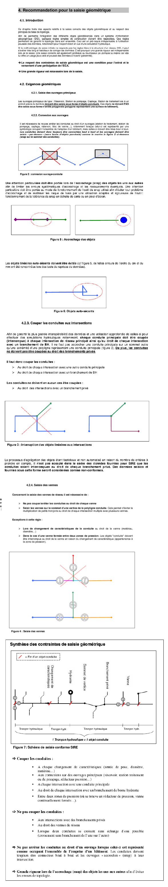

3.1. Struktura sítě pitné vody na QWAT
3.1.1. Pořadí zadání různých typů objektů
Aktualizace na QWAT se provádí v tomto pořadí:
Stavební body qwat_od.node, pro všechny:
stavební body
Vy
Zástrčka
Změna materiálu
Změny za poslední rok
Změna průměru
Vytvoření potrubí qwat_od.pipe, pro všechny:
Hlavní potrubí (síť)
Zavlažovací trubky
Spojovací potrubí
Odbočky potrubí. sekundární
Dopravní potrubí
Zavlažovací potrubí
Tvorba instalačních dílů qwat_od.vw_element_part, pro všechny:
Kříž
Změna sklonu
Ohyb
Manžeta
Těsnost límce
Zástrčka
Zavlažovací vývody
Ostatní různé části
Vytvoření úvodních bodů pro všechny:
Počáteční body
Vytvoření ventilů qwat_od.valve, pro všechny:
Síťové ventily
Hydrantové ventily
Přívodní ventily
Sekundární výstupní ventily
Regulační ventily
Očistit
Automatické vypouštěcí ventily
Vytvoření zavlažovacích terminálů qwat_od.vw_element_hydrant, pro všechny:
Hydrantové patníky
Tvorba opravných rukávů pro všechny:
Opravte pouzdro
Tvorba děl pro všechny:
Funguje qwat_od.vw_element_installation
Obaly qwat_od.cover
3.1.2. Směrnice o zabavení potrubí
Varování
Tato část se může měnit v závislosti na vývoji QWAT. Projekt byl zahájen obcemi Vaud (CH) a vychází ze směrnic SIRE. V této oblasti existuje několik možných digitalizací vodních sítí. Změny mohou být prováděny v závislosti na průběhu projektu a platných pravidlech.
Zabavení sítě musí být provedeno v souladu se směrnicemi stanovenými společností SIRE, podle níže uvedených příkladů.
